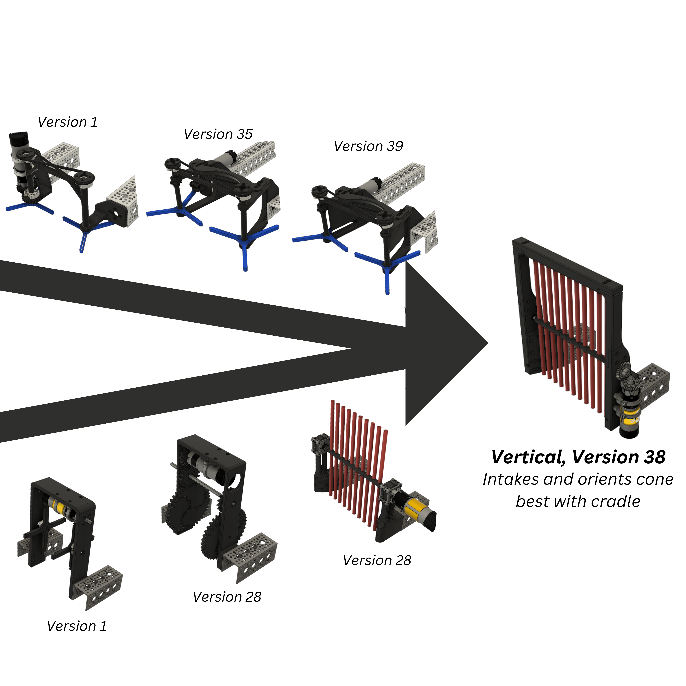

Collaboration and Efficiency¶
FTC® is built on collaboration, and there are several ways to make collaborating as efficient as possible. Here’s how!
Why Collaborate?¶
The benefit of collaboration is expanded creativity. Your team members aren’t identical - each one has a different method of approaching problems. Combining these unique mindsets often leads to creative, efficient, and effective solutions to software and mechanical issues.
General Collaboration¶
Your team’s leadership should communicate daily about the status of their squads - it’s imperative to ensure smooth team operations. You can use platforms like Discord and Slack to facilitate organized conversations. In addition, collaborative platforms like Canva and Google Drive are ideal for hosting engineering documentation, judging presentations, and marketing materials. The more material your members can access, the more they can contribute to.
Ideally, every member will also be openly documenting the projects they work on. This way, if another member needs to take over or work to improve a project, they can utilize publicly available documentation to work effectively.
Совет
Host mandatory team meetings at least once a week, and share each squad’s progress. This will give your team up-to-date knowledge about your robot and allow everyone to offer ideas at every stage of the design, programming, and outreach process.
Design Collaboration¶
Your designers probably have different styles of design and mechanical preferences, and their unique preferences can improve each of the different mechanisms on your robot.
Competitive Design¶
One way to maximize your designers“ creativity is to competitively prototype. 2-3 designers pick a mechanism and develop their own take on the design, then physically prototype them to test against certain criteria. The most successful design integrates the most successful components of each and is iteratively improved by a singular designer.
The biggest benefit to this approach is that you can integrate aspects of each designers“ personal techniques.
{kind=link}

7149 Enforcers, PowerPlay, Example of Competitive Prototyping. Two of their designers built an intake, with the final optimized design utilizing the best aspects from each prototype.¶
Cloud CAD¶
Your design team (and the rest of the team, if possible) should have access to your full suite of designs. Sharing your designs allows for teammates to help each other improve by sharing techniques and tricks, and allows your outreach team to easily create renders for presentations and marketing.
This can be accomplished by using CAD software built around shared folders like Onshape or Fusion 360. It can also be accomplished with other CAD software, like Solidworks or Inventor, but this is generally significantly more complicated to set up.
Software Collaboration¶
Software collaboration is easier to facilitate. Robot code should be version controlled regardless of the size of your software squad, so teaching your members how to share a team Github is an easy way to collaborate. Additionally, you can utilize pair programming (multiple members writing software together on one computer) to help catch bugs.
Efficiency¶
Collaboration only works if exercised efficiently. Here are some tips!
Work from home. Team meetings should be used as time to catch up between squads, make decisions, and physically test parts of the robot. CAD design iterations can be created and reviewed at home, and software can be written outside of practice hours. This will allow you more time to test and reflect.
Delegate tasks effectively. Squad leads should serve as facilitators, assigning tasks to squad members depending on their ability. If work is hoarded by one or two people, the overall workflow is slowed down immensely. Trust your teammates.
Follow deadlines and don’t procrastinate. Setting deadlines allows you to plan your season, and the earlier you start before a deadline, the more time you have to ask for help, tackle unexpected problems, and iterate more.
Share. If a team member has to search for documentation you were supposed to complete or an email you were supposed to send out, it creates a massive amount of administrative headache. Make sure you CC the correct people on emails and share your work with your entire team.
Don’t hide problems. If you broke something or calculated something incorrectly, don’t shove it under the rug. Your teammates should (and will) be incredibly understanding and will help to fix the problem. Being correct all the time is impossible, and everyone makes mistakes!
Communicate often with your squad and your team. Communicating is incredibly important on a team, as you can get fast feedback on problems, spark new ideas, and leverage the creativity of everyone on your team.